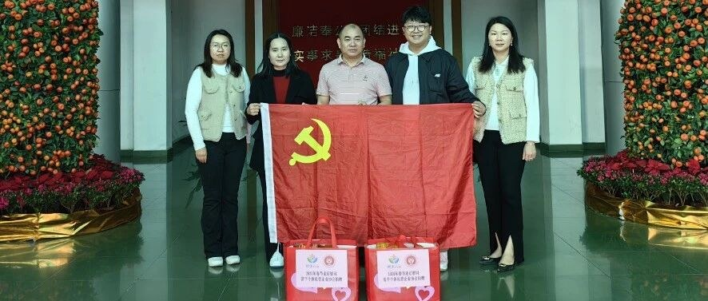

公益帮扶ABOUT US
服务常平个体私营经济的社会团体
协会在东莞市民政局登记成立，接受相关职能部门指导，密切联系政府与会员企业，引导会员守法诚信经营，推动常平镇个体私营经济健康发展。
2016登记成立年份
6 项登记业务范围
2 届理事会届次
常平镇服务区域
协会以党建引领会务发展，坚持深入了解会员企业、加强交流走访、参与共建共治，持续开展公益帮扶、政策宣讲与专题培训；在推动政府职能转变和放管服改革中积极建言献策，保障企业在制度建设中的知情权、参与权、表达权与监督权。
SERVICES
六项业务，与会员企业同行
宣传政策、信息服务、法律咨询、经验交流、业务培训、协助管理，把服务会员落在日常工作中。
MILESTONES
协会工作回顾
从登记成立到第二届理事会履职，协会与常平镇个体工商户、私营企业一路同行。
2016
协会登记成立
9月13日在东莞市民政局登记成立，面向常平镇个体工商户与私营企业开展服务。
2018
会员交流活动日
在海霞酒店举办年度会员交流活动，作工作总结与财务报告，并为新入会理事颁牌。
2019
新春团拜会
1月14日举办会员交流活动暨新春团拜会，理事会成员单位达75个，全年累计扶贫捐款34万元。
2021
第二次会员代表大会
8月8日召开第二次会员代表大会，选举产生第二届理事会与第一届监事会，袁志华当选会长。
2023
成立七周年庆典
8月8日举行第二届理事会员就职典礼暨成立七周年庆典，市镇相关部门与全体会员参加。
2025
新春走访慰问
1月21日走访慰问困难外来务工人员与困难残疾人，送上生活物资与新春关怀。
NEWS
新闻资讯
协会活动、公益帮扶、党建引领与双拥共建等工作动态。

MOMENTS
协会活动剪影
会员交流、走访慰问、助学帮扶与拥军共建的现场记录。